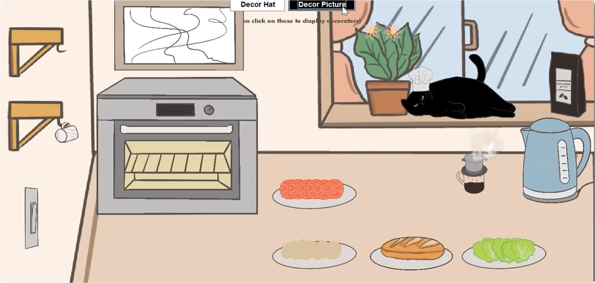
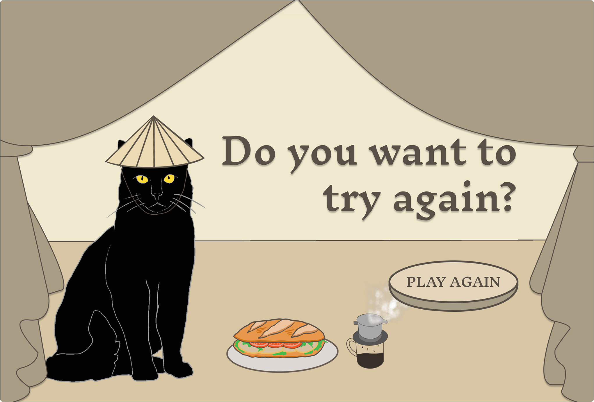
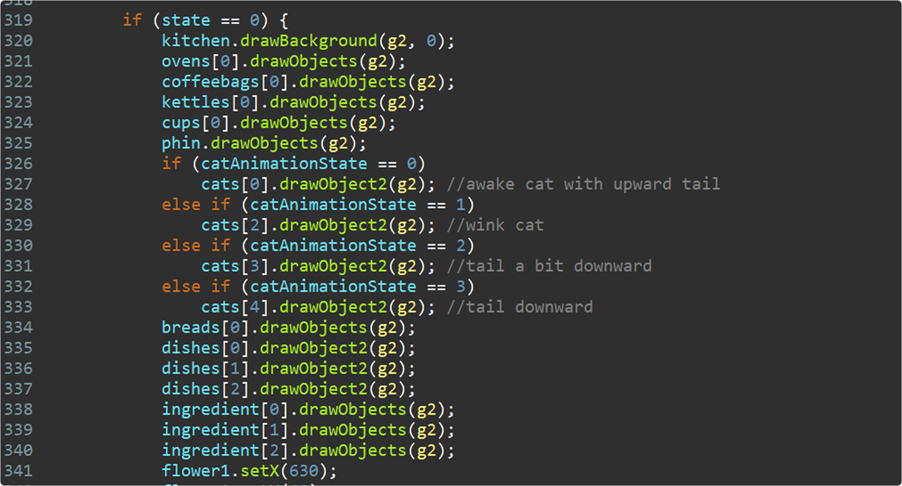
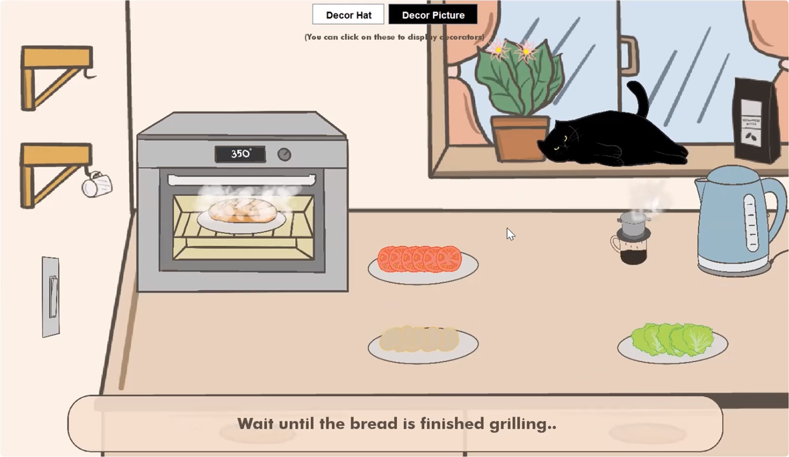
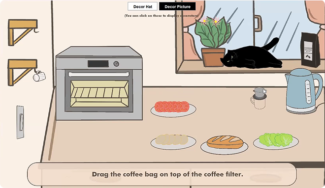

Individual Project
An interaction-focused simulation translating a real-world Vietnamese routine into a step-based gameplay experience.
Vietnamese Breakfast is a cooking simulation that immerses players in the process of preparing a traditional Vietnamese breakfast. The gameplay focuses on two main tasks: brewing a hot cup of coffee and making Vietnamese bread. Players will interact with household items by dragging and clicking to complete each step by provided step-by-step instructions.
The project was centered around translating a familiar cultural experience into an interactive format. The idea focused on recreating the process of preparing a Vietnamese breakfast in a way that is both structured and accessible to players.
The concept was refined to emphasize step-based interaction and guided progression, ensuring that each action clearly communicates its purpose. This approach allowed the experience to balance cultural representation with usability, making the process intuitive for users unfamiliar with the dishes.
The visual style focuses on clean, hand-drawn illustrations that highlight kitchen elements and food preparation steps. The goal was to create a calm and approachable environment that supports the guided gameplay experience.
Warm color palettes, primarily yellows, reds, and oranges, were used to reflect the comfort and familiarity associated with traditional Vietnamese breakfast culture. Visual elements such as ingredients, utensils, and background details were simplified to maintain clarity while reinforcing the setting.


I implemented the core gameplay mechanics using Java, focusing on building interactive systems that respond to player input. The experience is structured around step-by-step actions, where each interaction triggers visual and audio feedback to guide progression.
A key part of the system was managing game states using a Finite State Machine (FSM), ensuring smooth transitions between different stages of the cooking process. This structure allowed the gameplay flow to remain organized and predictable.



The project underwent multiple rounds of testing and iteration to improve interaction clarity and usability. One of the main challenges was ensuring accurate collision detection between ingredients and kitchen tools.
To address this, I refined interaction boundaries and implemented bounding box adjustments to improve input precision. Additional UI guidance, such as text prompts, was introduced to help users understand the required actions at each step.
These iterations improved the overall user experience by reducing confusion and making interactions more responsive and reliable.
Designing step-based interactions enhanced the importance of clarity and feedback in guiding user actions.
Building the project in Java strengthened my understanding of handling user input, interaction logic, and structuring gameplay systems.
Adapting a real-world process into gameplay required making it intuitive while preserving its cultural meaning.
Testing and refinement were essential in improving interaction accuracy and overall user experience.